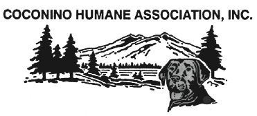
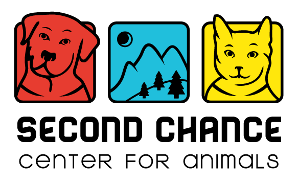
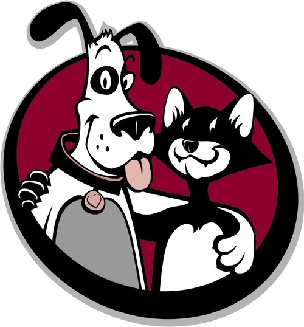

The Sponsor
- Cindy Brown -

Cindy Brown is the Assistant Director of Development for Student Success at NAU. She was a director at the Second Chance Center for animals in Flagstaff, and an advocate for animal welfare.
Sponsor Organizations
Northern Arizona Animal Welfare Task Force
Coconino Humane Society
- [Key Member] -
It is the mission of the Coconino Humane Association to operate a humane and caring shelter that will give aid to unwanted, abandoned, and mistreated animals in Flagstaff and across northern Arizona.
Second Chance Center for Animals
- Sean Hawkins -
Through intervention strategies, targeted rescue, compassionate shelter, responsible adoptions, expert veterinary care, and positive animal training programs, Second Chance Center for Animals exists to save the lives of homeless cats and dogs across Northern Arizona.
Paw Placement of Northern Arizona
- Diane Jarvis -
Our mission is to reduce euthanasia of homeless cats and dogs through rescue, adoption and education about responsible pet guardianship.